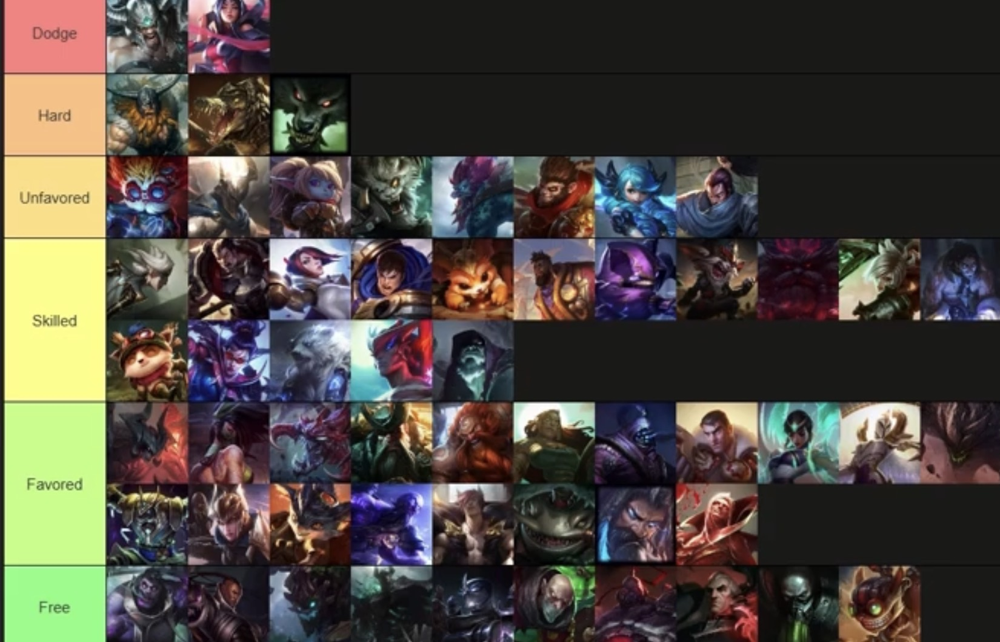

🛡️ Builds y objetos situacionales
Build principal: Eclipse → Cuchilla Negra → Sterak → Botas defensivas según matchup.
Objetos situacionales:
- Corazón de acero – Contra tanques muy duros.
- Baile de la muerte – Si necesitas más sustain en peleas.
- Filo de la noche – Contra mucho CC.
Explicación: Ambessa se beneficia de builds híbridas entre daño y aguante, adaptándose a si la partida necesita burst o supervivencia.
⚔️ Matchups y runas
| Campeón enemigo | Dificultad | Runas recomendadas | Hechizos | Notas |
|---|---|---|---|---|
| Renekton | Difícil | Conquistador + Tenacidad | Destello + Fantasmal | Juega pasivo antes de nivel 6, evita intercambios largos. |
| Gwen | Medio | Ritmo Fatal | Destello + Fantasmal | Abusa del rango en los primeros niveles. |
| Ornn | Fácil | Conquistador | Destello + Teleportar | Castiga su falta de movilidad, fuerza peleas cortas. |
📊 Matchup Tierlist
Aquí puedes colocar una imagen con tu tierlist personalizada de matchups:
